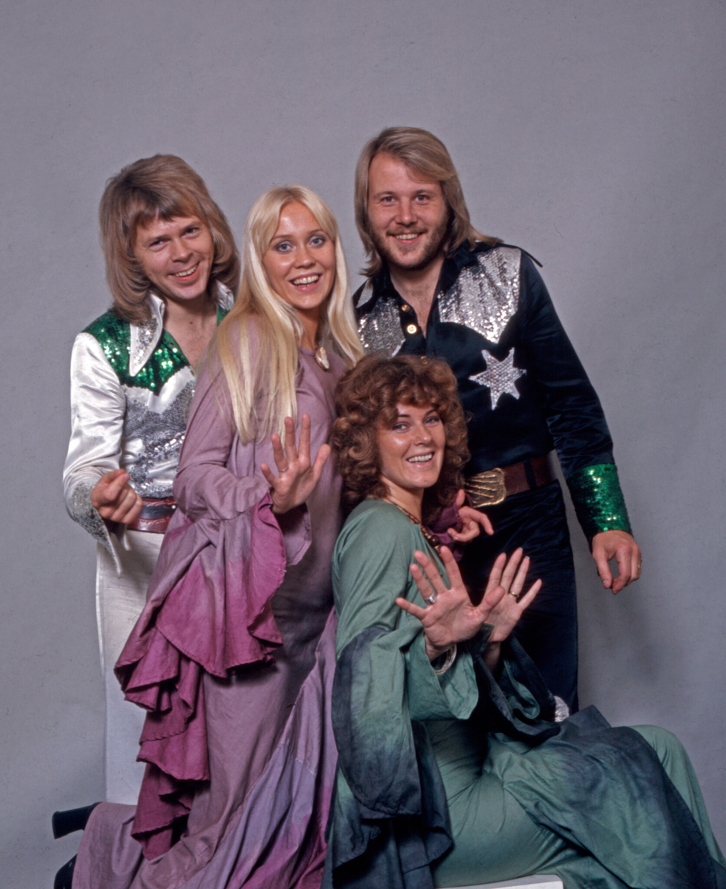

Visit Abba!

I spent ten years researching and writing a book about love songs.
I learned many things, but two facts stand out:
You can't deny it. Every one of you knows the words to a bunch of sentimental, icky-sweet songs—but would hate to admit it to your friends.
By the way, you will probably retain these lyrics in your memory at the very end of your life, even after you have forgotten so many other things. That's how powerfully we are attached to this music.
Music critics are especially ashamed of love songs. Ninety percent of pop songs are about love, as critic Dave Hickey pointed out, but critics prefer to write about the other ten percent.
The ultra-hip critics will tell you that love songs are wimpy. But, of course, they know these songs, too—and can also sing along with all the words.
There are many reasons for this shame. But the biggest one, I believe, is that love songs remind us of our vulnerability—especially sad love songs. They are incompatible with macho stances or ultra-hip poses.
I point out, for what it's worth, that my dear friend Scott Timberg, who committed suicide shortly after his 50th birthday, was researching a book about breakup songs at the time of his death. We often spoke about this topic in the final weeks of his life. I now think this was an expression of his own sense of the fragility and vulnerability of life.
It's a simple fact that, when you sing these love songs, you feel exposed. Very exposed.
But I believe that's the only way to sing them. And this must take an emotional toll, at some level, on the singer. I've felt it in my own life when I have sung these songs for a public audience. It's almost painful to open myself up that much to total strangers.
The first time I did it on record, it only happened because the producer insisted. He heard me singing a love song in a private moment at the piano, and insisted that we put it on tape.
When I listen to this, it still makes me feel uncomfortable. It's not that I don't dig the track—I absolutely do—but still it seems strange that intimate expressions of this sort are put on the marketplace for public consumption.
Yet that's how we roll in the modern world.
Here's my simple advice to singers: If you don't feel that vulnerability, you're not singing these songs correctly.
Yet all this is very paradoxical.
That's because I learned, while researching my book Love Songs, that this music is not wimpy. Not at all. Love songs are the toughest, most battle-hardened music in the history of the world.
The singers of these songs have been criticized, censored, cursed, physically attacked, sometimes even killed.
That's because the love song is inherently disruptive, and even political. It expresses our deepest feelings in public—and this is always linked to freedom of speech, human rights, and personal autonomy.
New ways of singing about love have always been a cause of social change. That was true in ancient times. It was true at the dawn of the Renaissance. It has been true in our own lifetimes—just talk to people who participated in the Summer of Love or the Stonewall uprising, or in other liberation movements.